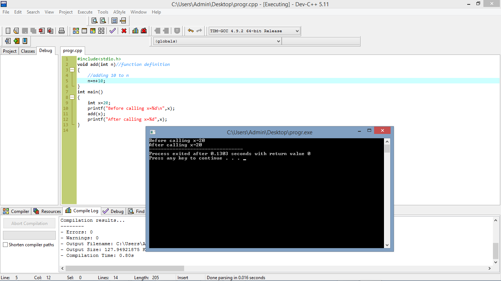
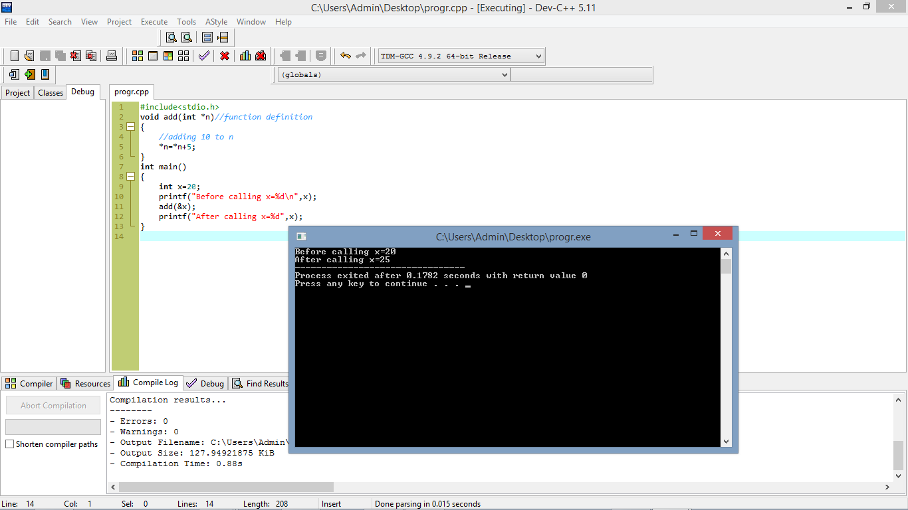

Call by value and call by references
Function can be called in two ways:
- Call by value
- Call by reference
Call by value
In this type of calling a function direct value is passed at time of calling.
In call by value the changes made in formal parameters don't reflect in actual parameters.
Example
As you see above we can see that direct value is passed at the time of calling.
Here is actual parameter and is formal parameter.
Call by reference
In this type of calling a function the reference of the value is passed at the time of calling.
Reference is also called address and when the address of data is passed at the time of calling so it is necessary to use pointer in the place of parameter
Example
to see the difference betwwen call by reference and call by value you can focus on the output of thep program